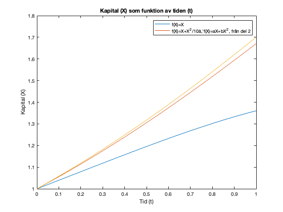
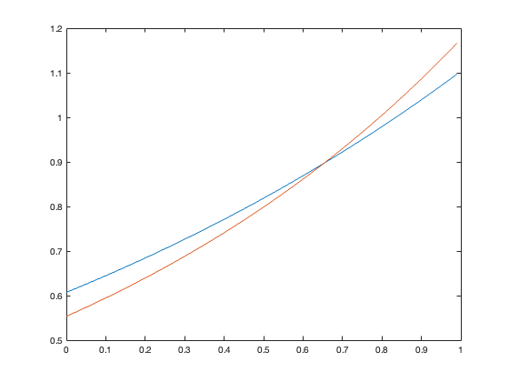

T = 1;
N = 100;
delta_t = T/N;
x_0 = 1;
f_1 = @(X)(X);
D_f_1 = @(X)(1);
f_2 = @(X)(X+(X.^2)./10);
D_f_2 = @(X)(1+X./5);
c=[1.070894403456629,0.061849368625104];
b=@(x,c)(c(1)*x+c(2)*x.^2);
D_b = @(X,c)(c(1)+2*c(2)*X);
g = @(X)(2*sqrt(X));
D_g = @(X)(1./sqrt(X));
X_1 = zeros(1,N+1);
X_2 = zeros(1,N+1);
X_b = zeros(1,N+1);
X_1(1)=x_0;
X_2(1)=x_0;
X_b(1)=x_0;
for i = 1:N
X_1(i+1) = X_1(i)+delta_t*D_f_1(X_1(i));
X_2(i+1) = X_2(i)+delta_t*D_f_2(X_2(i));
X_b(i+1) = X_b(i)+delta_t*D_b(X_b(i),c);
end
X_update_1 = zeros(1,N+1);
X_update_2 = zeros(1,N+1);
X_update_b = zeros(1,N+1);
X_update_1(1)=x_0;
X_update_2(1)=x_0;
X_update_b(1)=x_0;
lambda_1 = zeros(1,N);
lambda_2 = zeros(1,N);
lambda_b = zeros(1,N);
d_norm_1 = 1;
d_norm_2 = 1;
d_norm_b = 1;
while d_norm_1>10^(-10)
lambda_1(N) = D_g(X_1(N+1));
for j=N-1:-1:1
lambda_1(j) = lambda_1(j+1) + delta_t*D_f_1(X_1(j+1))*lambda_1(j+1);
end
for j=1:N
X_update_1(j+1) = X_update_1(j) + delta_t*(f_1(X_update_1(j))- ...
1/(lambda_1(j)^(3/5)));
end
diff = X_1-X_update_1;
d_norm_1 = norm(diff);
X_1 = X_update_1;
end
while d_norm_2>10^(-10)
lambda_2(N) = D_g(X_2(N+1));
for j=N-1:-1:1
lambda_2(j) = lambda_2(j+1) + delta_t*D_f_2(X_2(j+1))*lambda_2(j+1);
end
for j=1:N
X_update_2(j+1) = X_update_2(j) + delta_t*(f_2(X_update_2(j))- 1/(lambda_2(j)^(3/5)));
end
diff = X_2-X_update_2;
d_norm_2 = norm(diff);
X_2 = X_update_2;
end
while d_norm_b>10^(-10)
lambda_b(N) = D_g(X_b(N+1));
for j=N-1:-1:1
lambda_b(j) = lambda_b(j+1) + delta_t*D_b(X_b(j+1),c)*lambda_b(j+1);
end
for j=1:N
X_update_b(j+1) = X_update_b(j) + delta_t*(b(X_update_b(j),c)- 1/(lambda_b(j)^(3/5)));
end
diff = X_b-X_update_b;
d_norm_b = norm(diff);
X_b = X_update_b;
end
alpha_1 = lambda_1.^(-3/5);
alpha_2 = lambda_2.^(-3/5);
alpha_t = lambda_b.^(-3/5);
clf, close all
plot(0:delta_t:T,X_1)
hold on
plot(0:delta_t:T,X_2)
plot(0:delta_t:T,X_b)
legend('f(X)=X','f(X)=X+X^2/10ä,''f(X)=aX+bX^2, från del 2')
xlabel('Tid (t)')
ylabel('Kapital (X)')
title('Kapital (X) som funktion av tiden (t)')
figure(2)
plot(0:delta_t:T-delta_t,alpha_1)
hold on
plot(0:delta_t:T-delta_t,alpha_2)
 